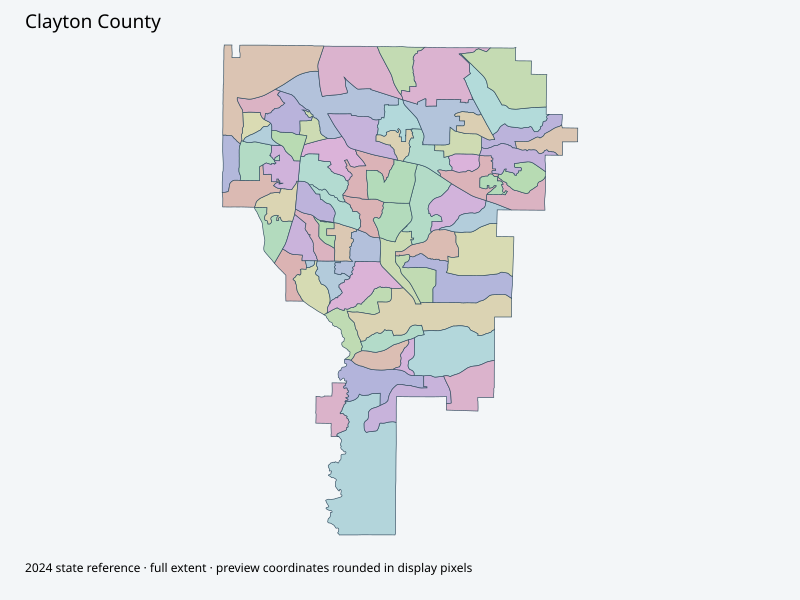

Map index · 70 explicit-FIPS 2024 map rows; 70 historical result identities. No approved crosswalk.

Full native coordinate/attribute extraction (gzip JSON) · Original complete statewide ZIP
County-hosted VotingPrecincts service returned69 complete polygon features with native attributes. Main election/GIS pages returned307 challenge responses; alternative GIS host shell was inspected. No challenge response is treated as a map or approval.
Full objects, county source IDs/clocks and attributes: all 2,701 native contexts. isVirtual:false and source label precinct do not prove physical geometry.
| Source name | Full source GUID | Breakdown ordinal | Source | Map status |
|---|---|---|---|---|
| Ellenwood 1 | 01000000-d884-2e72-0882-08dcda4b8eca | 0 | 2024NovGen--clayton-county-ga | unreviewed / no approved map join |
| Ellenwood 2 | 01000000-d884-2e72-d0cb-08dcda4b8ecd | 1 | 2024NovGen--clayton-county-ga | unreviewed / no approved map join |
| Forest Park 1 | 01000000-d884-2e72-a027-08dcda4b8ed1 | 2 | 2024NovGen--clayton-county-ga | unreviewed / no approved map join |
| Forest Park 2 | 01000000-d884-2e72-8cc5-08dcda4b8ed6 | 3 | 2024NovGen--clayton-county-ga | unreviewed / no approved map join |
| Forest Park 3 | 01000000-d884-2e72-3bc8-08dcda4b8eda | 4 | 2024NovGen--clayton-county-ga | unreviewed / no approved map join |
| Forest Park 4 | 01000000-d884-2e72-7b30-08dcda4b8ede | 5 | 2024NovGen--clayton-county-ga | unreviewed / no approved map join |
| Forest Park 5 | 01000000-d884-2e72-32e7-08dcda4b8ee3 | 6 | 2024NovGen--clayton-county-ga | unreviewed / no approved map join |
| Forest Park 6 | 01000000-d884-2e72-44c3-08dcda4b8ee8 | 7 | 2024NovGen--clayton-county-ga | unreviewed / no approved map join |
| Jonesboro 1 | 01000000-d884-2e72-2956-08dcda4b8eed | 8 | 2024NovGen--clayton-county-ga | unreviewed / no approved map join |
| Jonesboro 2 | 01000000-d884-2e72-5902-08dcda4b8ef1 | 9 | 2024NovGen--clayton-county-ga | unreviewed / no approved map join |
| Jonesboro 3 | 01000000-d884-2e72-23de-08dcda4b8ef5 | 10 | 2024NovGen--clayton-county-ga | unreviewed / no approved map join |
| Jonesboro 4 | 01000000-d884-2e72-f6a5-08dcda4b8ef8 | 11 | 2024NovGen--clayton-county-ga | unreviewed / no approved map join |
| Jonesboro 5 | 01000000-d884-2e72-9f17-08dcda4b8efc | 12 | 2024NovGen--clayton-county-ga | unreviewed / no approved map join |
| Jonesboro 6 | 01000000-d884-2e72-4dae-08dcda4b8f00 | 13 | 2024NovGen--clayton-county-ga | unreviewed / no approved map join |
| Jonesboro 7 | 01000000-d884-2e72-1615-08dcda4b8f04 | 14 | 2024NovGen--clayton-county-ga | unreviewed / no approved map join |
| Jonesboro 8 | 01000000-d884-2e72-b1bd-08dcda4b8f07 | 15 | 2024NovGen--clayton-county-ga | unreviewed / no approved map join |
| Jonesboro 9 | 01000000-d884-2e72-75ea-08dcda4b8f0b | 16 | 2024NovGen--clayton-county-ga | unreviewed / no approved map join |
| Jonesboro 10 | 01000000-d884-2e72-26f7-08dcda4b8f0f | 17 | 2024NovGen--clayton-county-ga | unreviewed / no approved map join |
| Jonesboro 11 | 01000000-d884-2e72-d01c-08dcda4b8f12 | 18 | 2024NovGen--clayton-county-ga | unreviewed / no approved map join |
| Jonesboro 12 | 01000000-d884-2e72-0e05-08dcda4b8f19 | 19 | 2024NovGen--clayton-county-ga | unreviewed / no approved map join |
| Jonesboro 13 | 01000000-d884-2e72-f722-08dcda4b8f1c | 20 | 2024NovGen--clayton-county-ga | unreviewed / no approved map join |
| Jonesboro 14 | 01000000-d884-2e72-cd60-08dcda4b8f20 | 21 | 2024NovGen--clayton-county-ga | unreviewed / no approved map join |
| Jonesboro 15 | 01000000-d884-2e72-9346-08dcda4b8f24 | 22 | 2024NovGen--clayton-county-ga | unreviewed / no approved map join |
| Jonesboro 16 | 01000000-d884-2e72-e2c1-08dcda4b8f28 | 23 | 2024NovGen--clayton-county-ga | unreviewed / no approved map join |
| Jonesboro 17 | 01000000-d884-2e72-a6eb-08dcda4b8f2c | 24 | 2024NovGen--clayton-county-ga | unreviewed / no approved map join |
| Jonesboro 18 | 01000000-d884-2e72-4bd5-08dcda4b8f30 | 25 | 2024NovGen--clayton-county-ga | unreviewed / no approved map join |
| Jonesboro 19 | 01000000-d884-2e72-d342-08dcda4b8f33 | 26 | 2024NovGen--clayton-county-ga | unreviewed / no approved map join |
| Jonesboro 20 | 01000000-d884-2e72-a88b-08dcda4b8f37 | 27 | 2024NovGen--clayton-county-ga | unreviewed / no approved map join |
| Jonesboro 21 | 01000000-d884-2e72-53b4-08dcda4b8f3c | 28 | 2024NovGen--clayton-county-ga | unreviewed / no approved map join |
| Jonesboro 22 | 01000000-d884-2e72-89d7-08dcda4b8f41 | 29 | 2024NovGen--clayton-county-ga | unreviewed / no approved map join |
| Lake City | 01000000-d884-2e72-84c1-08dcda4b8f46 | 30 | 2024NovGen--clayton-county-ga | unreviewed / no approved map join |
| Lovejoy 1 | 01000000-d884-2e72-1219-08dcda4b8f4b | 31 | 2024NovGen--clayton-county-ga | unreviewed / no approved map join |
| Lovejoy 2 | 01000000-d884-2e72-1b15-08dcda4b8f4f | 32 | 2024NovGen--clayton-county-ga | unreviewed / no approved map join |
| Lovejoy 3 | 01000000-d884-2e72-dc70-08dcda4b8f52 | 33 | 2024NovGen--clayton-county-ga | unreviewed / no approved map join |
| Lovejoy 4 | 01000000-d884-2e72-b439-08dcda4b8f56 | 34 | 2024NovGen--clayton-county-ga | unreviewed / no approved map join |
| Lovejoy 5 | 01000000-d884-2e72-5037-08dcda4b8f5a | 35 | 2024NovGen--clayton-county-ga | unreviewed / no approved map join |
| Lovejoy 6 | 01000000-d884-2e72-e6b7-08dcda4b8f5d | 36 | 2024NovGen--clayton-county-ga | unreviewed / no approved map join |
| Lovejoy 7 | 01000000-d884-2e72-7140-08dcda4b8f61 | 37 | 2024NovGen--clayton-county-ga | unreviewed / no approved map join |
| Lovejoy 8 | 01000000-d884-2e72-fb2a-08dcda4b8f64 | 38 | 2024NovGen--clayton-county-ga | unreviewed / no approved map join |
| Morrow 1 | 01000000-d884-2e72-7a89-08dcda4b8f68 | 39 | 2024NovGen--clayton-county-ga | unreviewed / no approved map join |
| Morrow 2 | 01000000-d884-2e72-1b10-08dcda4b8f6c | 40 | 2024NovGen--clayton-county-ga | unreviewed / no approved map join |
| Morrow 3 | 01000000-d884-2e72-b13a-08dcda4b8f6f | 41 | 2024NovGen--clayton-county-ga | unreviewed / no approved map join |
| Morrow 4 | 01000000-d884-2e72-7768-08dcda4b8f73 | 42 | 2024NovGen--clayton-county-ga | unreviewed / no approved map join |
| Morrow 5 | 01000000-d884-2e72-1855-08dcda4b8f77 | 43 | 2024NovGen--clayton-county-ga | unreviewed / no approved map join |
| Morrow 6 | 01000000-d884-2e72-af92-08dcda4b8f7a | 44 | 2024NovGen--clayton-county-ga | unreviewed / no approved map join |
| Morrow 7 | 01000000-d884-2e72-c47d-08dcda4b8f7e | 45 | 2024NovGen--clayton-county-ga | unreviewed / no approved map join |
| Morrow 8 | 01000000-d884-2e72-432c-08dcda4b8f82 | 46 | 2024NovGen--clayton-county-ga | unreviewed / no approved map join |
| Morrow 9 | 01000000-d884-2e72-c4bb-08dcda4b8f85 | 47 | 2024NovGen--clayton-county-ga | unreviewed / no approved map join |
| Morrow 10 | 01000000-d884-2e72-2f75-08dcda4b8f89 | 48 | 2024NovGen--clayton-county-ga | unreviewed / no approved map join |
| Morrow 11 | 01000000-d884-2e72-b8d8-08dcda4b8f8c | 49 | 2024NovGen--clayton-county-ga | unreviewed / no approved map join |
| Oak 1 | 01000000-d884-2e72-49f3-08dcda4b8f90 | 50 | 2024NovGen--clayton-county-ga | unreviewed / no approved map join |
| Oak 2 | 01000000-d884-2e72-c7c8-08dcda4b8f93 | 51 | 2024NovGen--clayton-county-ga | unreviewed / no approved map join |
| Oak 3 | 01000000-d884-2e72-4477-08dcda4b8f97 | 52 | 2024NovGen--clayton-county-ga | unreviewed / no approved map join |
| Oak 4 | 01000000-d884-2e72-e06a-08dcda4b8f9a | 53 | 2024NovGen--clayton-county-ga | unreviewed / no approved map join |
| Oak 5 | 01000000-d884-2e72-d666-08dcda4b8f9e | 54 | 2024NovGen--clayton-county-ga | unreviewed / no approved map join |
| Oak 6 | 01000000-d884-2e72-6f41-08dcda4b8fa2 | 55 | 2024NovGen--clayton-county-ga | unreviewed / no approved map join |
| Panhandle 1 | 01000000-d884-2e72-0b99-08dcda4b8fa6 | 56 | 2024NovGen--clayton-county-ga | unreviewed / no approved map join |
| Panhandle 2 | 01000000-d884-2e72-7ef8-08dcda4b8fa9 | 57 | 2024NovGen--clayton-county-ga | unreviewed / no approved map join |
| Riverdale 1 | 01000000-d884-2e72-22d4-08dcda4b8fad | 58 | 2024NovGen--clayton-county-ga | unreviewed / no approved map join |
| Riverdale 2 | 01000000-d884-2e72-a512-08dcda4b8fb0 | 59 | 2024NovGen--clayton-county-ga | unreviewed / no approved map join |
| Riverdale 3 | 01000000-d884-2e72-4bf6-08dcda4b8fb4 | 60 | 2024NovGen--clayton-county-ga | unreviewed / no approved map join |
| Riverdale 4 | 01000000-d884-2e72-3ac2-08dcda4b8fb8 | 61 | 2024NovGen--clayton-county-ga | unreviewed / no approved map join |
| Riverdale 5 | 01000000-d884-2e72-d19f-08dcda4b8fbb | 62 | 2024NovGen--clayton-county-ga | unreviewed / no approved map join |
| Riverdale 6 | 01000000-d884-2e72-9306-08dcda4b8fbf | 63 | 2024NovGen--clayton-county-ga | unreviewed / no approved map join |
| Riverdale 7 | 01000000-d884-2e72-ac36-08dcda4b8fc3 | 64 | 2024NovGen--clayton-county-ga | unreviewed / no approved map join |
| Riverdale 8 | 01000000-d884-2e72-25ee-08dcda4b8fc7 | 65 | 2024NovGen--clayton-county-ga | unreviewed / no approved map join |
| Riverdale 9 | 01000000-d884-2e72-a30e-08dcda4b8fca | 66 | 2024NovGen--clayton-county-ga | unreviewed / no approved map join |
| Riverdale 10 | 01000000-d884-2e72-3842-08dcda4b8fce | 67 | 2024NovGen--clayton-county-ga | unreviewed / no approved map join |
| Riverdale 11 | 01000000-d884-2e72-afcf-08dcda4b8fd1 | 68 | 2024NovGen--clayton-county-ga | unreviewed / no approved map join |
| Riverdale 12 | 01000000-d884-2e72-294a-08dcda4b8fd5 | 69 | 2024NovGen--clayton-county-ga | unreviewed / no approved map join |
| Original row ordinal | DISTRICT | PRECINCT_I | PRECINCT_N |
|---|---|---|---|
| 322 | 063JB01 | JB01 | JONESBORO 1 |
| 323 | 063RD02 | RD02 | RIVERDALE 2 |
| 324 | 063JB12 | JB12 | JONESBORO 12 |
| 325 | 063RD12 | RD12 | RIVERDALE 12 |
| 365 | 063PH2 | PH2 | PANHANDLE 2 |
| 369 | 063PH1 | PH1 | PANHANDLE 1 |
| 370 | 063JB13 | JB13 | JONESBORO 13 |
| 371 | 063LJ3 | LJ3 | LOVEJOY 3 |
| 372 | 063LJ4 | LJ4 | LOVEJOY 4 |
| 373 | 063LJ5 | LJ5 | LOVEJOY 5 |
| 374 | 063LJ8 | LJ8 | LOVEJOY 8 |
| 375 | 063JB19 | JB19 | JONESBORO 19 |
| 376 | 063JB17 | JB17 | JONESBORO 17 |
| 377 | 063JB20 | JB20 | JONESBORO 20 |
| 378 | 063JB02 | JB02 | JONESBORO 2 |
| 379 | 063RD09 | RD09 | RIVERDALE 9 |
| 380 | 063JB16 | JB16 | JONESBORO 16 |
| 381 | 063RD05 | RD05 | RIVERDALE 5 |
| 382 | 063JB21 | JB21 | JONESBORO 21 |
| 383 | 063JB03 | JB03 | JONESBORO 3 |
| 384 | 063JB10 | JB10 | JONESBORO 10 |
| 385 | 063JB09 | JB09 | JONESBORO 9 |
| 386 | 063JB04 | JB04 | JONESBORO 4 |
| 387 | 063LJ6 | LJ6 | LOVEJOY 6 |
| 388 | 063LJ1 | LJ1 | LOVEJOY 1 |
| 389 | 063LJ2 | LJ2 | LOVEJOY 2 |
| 390 | 063LJ7 | LJ7 | LOVEJOY 7 |
| 391 | 063JB05 | JB05 | JONESBORO 5 |
| 392 | 063JB14 | JB14 | JONESBORO 14 |
| 393 | 063JB11 | JB11 | JONESBORO 11 |
| 394 | 063JB18 | JB18 | JONESBORO 18 |
| 395 | 063JB07 | JB07 | JONESBORO 7 |
| 396 | 063JB06 | JB06 | JONESBORO 6 |
| 397 | 063JB22 | JB22 | JONESBORO 22 |
| 1096 | 063JB08 | JB08 | JONESBORO 8 |
| 1097 | 063MO08 | MO08 | MORROW 8 |
| 1098 | 063MO05 | MO05 | MORROW 5 |
| 1099 | 063MO10 | MO10 | MORROW 10 |
| 1268 | 063RD04 | RD04 | RIVERDALE 4 |
| 1269 | 063RD07 | RD07 | RIVERDALE 7 |
| 1270 | 063OAK5 | OAK5 | OAK5 |
| 1271 | 063FP3 | FP3 | FOREST PARK 3 |
| 1272 | 063RD06 | RD06 | RIVERDALE 6 |
| 1273 | 063JB15 | JB15 | JONESBORO 15 |
| 1274 | 063FP5 | FP5 | FOREST PARK 5 |
| 1275 | 063FP6 | FP6 | FOREST PARK 6 |
| 1276 | 063FP4 | FP4 | FOREST PARK 4 |
| 1277 | 063FP1 | FP1 | FOREST PARK 1 |
| 1283 | 063FP2 | FP2 | FOREST PARK 2 |
| 1476 | 063RD11 | RD11 | RIVERDALE 11 |
| 1480 | 063RD08 | RD08 | RIVERDALE 8 |
| 1481 | 063RD01 | RD01 | RIVERDALE 1 |
| 1482 | 063RD03 | RD03 | RIVERDALE 3 |
| 1483 | 063OAK4 | OAK4 | OAK 4 |
| 1484 | 063OAK6 | OAK6 | OAK 6 |
| 1485 | 063OAK2 | OAK2 | OAK 2 |
| 1486 | 063RD10 | RD10 | RIVERDALE 10 |
| 1487 | 063OAK3 | OAK3 | OAK 3 |
| 1504 | 063OAK1 | OAK1 | OAK 1 |
| 2411 | 063MO02 | MO02 | MORROW 2 |
| 2412 | 063MO07 | MO07 | MORROW 7 |
| 2413 | 063MO03 | MO03 | MORROW 3 |
| 2414 | 063LC1 | LC1 | LAKE CITY |
| 2415 | 063MO04 | MO04 | MORROW 4 |
| 2416 | 063MO09 | MO09 | MORROW 9 |
| 2417 | 063MO06 | MO06 | MORROW 6 |
| 2418 | 063MO11 | MO11 | MORROW 11 |
| 2419 | 063EW1 | EW1 | ELLENWOOD 1 |
| 2420 | 063MO01 | MO01 | MORROW 1 |
| 2422 | 063EW2 | EW2 | ELLENWOOD 2 |